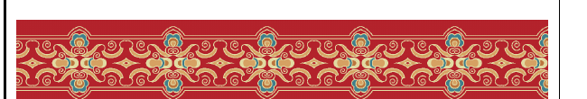

教材学习区 · 先学数学，再做设计
什么是二方连续纹样？
教材定义：“一个单位图案沿上下或左右方向连续排列所形成的横式或纵式带状纹样（也叫花边纹样）。”
先观察教材中的二方连续纹样

教材第137页表1第一行 · 教材示范纹样
① 单位图案先找出重复排列所依据的单位图案。
② 排列方向沿上下或左右方向连续排列，形成纵式或横式带状纹样。
③ 变换方式观察单位图案怎样通过平移、旋转、轴对称等方式重复排列。
学习边界
本区直接使用教材第137页表1中的纹样，落实活动1：识别单位图案及其变换方式。云朵、星星、颜色和间距只在后面的迁移创作区出现。
本区直接使用教材第137页表1中的纹样，落实活动1：识别单位图案及其变换方式。云朵、星星、颜色和间距只在后面的迁移创作区出现。
第一关 · 根据定义建立观察标准
二方连续纹样要看清什么？
前两项来自教材定义，“变换方式”是教材表1活动要求。选出三个观察点。
迁移创作区 · 改编任务，不是教材原题
现在，说出你自己的创意
先由你决定图案、颜色、排列方式和想表达的感觉。平台暂不给范案，只在你表达完创意后进行实现。
我的创意
AI协同 · 智能体追问＋本地规则执行先说，再实现
需要帮助时打开右侧“AI智能体”，让它只追问缺少的条件；把最终确认的创意原话填写在下方，再由实验画布执行。AI对话与画布暂不自动同步，必须由你核对。
需要帮助时打开右侧“AI智能体”，让它只追问缺少的条件；把最终确认的创意原话填写在下方，再由实验画布执行。AI对话与画布暂不自动同步，必须由你核对。
若浏览器不支持语音识别，可直接使用文字输入。
迁移创作区 · 平台把创意可视化
这是你想象中的云宝新衣吗？
先核对平台对创意的理解，再改图案、颜色、变换方式和间距。颜色与间距是创作参数，不作为教材知识考查。
平台理解卡
调整平台创作参数
这里用于实现创意；教材学习目标仍然只是识别单位图案及变换方式。
紧密
展开的纹样带
平台执行说明（含创作参数）
迁移创作区 · 作品不只要好看，还要说得清
说明你的构图规律
说出单位图案、排列方向和变换方式，让同伴根据说明继续画出纹样。
我的作品说明
要与右侧最终规则一致，平台会检查关键条件，教师再人工评阅。
我选的单位图案
采用什么变换方式
沿哪个方向连续排列
同伴续画验证
改编迁移问题
如果云宝的衣服变宽，你不再使用平台，怎样根据现有的单位图案继续画出更长的纹样？